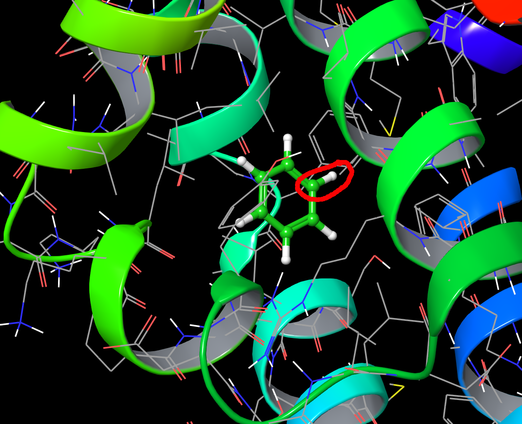

FEP Ligand Mutation Tutorial
In this tutorial, you will set up an FEP calculation in which a ligand molecule is transformed by addition of a functional group, in the presence of a receptor. The receptor is an engineered version of the protein lysozyme containing an artificial non-polar cavity. The ligand is benzene, and it is transformed to ethyl benzene, to determine if ethyl benzene is a better ligand than benzene. This is a system where ligand docking calculations often fail, since the complexes fall outside the narrow range of typical drug-like molecules binding to common targets that their scoring functions are trained on. The system represents a rather small receptor and a simple ligand, chosen to make the tutorial simple and relatively fast.
Preparing the Receptor and Ligand
The structure of the ligand-receptor complex is taken from the PDB. X-ray structures usually need preparation for modeling, to assign bonds, add hydrogens, remove unwanted molecules, optimize the hydrogen bonding, and preminimize the structure. This is done in the Protein Preparation Wizard panel.
-
Click Protein Preparation Wizard on the Favorites toolbar.
The Protein Preparation Wizard panel opens.
-
In the PDB text box, type 181L and press Enter.
The structure of 181L is imported from the PDB and displayed in the Workspace. It is colored by the PDB conversion status, which can indicate problems in the structure. The orange molecules are het groups (nonstandard residues).
-
In the Delete waters beyond text box, enter 0.
All waters are removed, as the system will be solvated later in preparation for the MD simulations. Water does not play a role in binding here. If it does, you may want to keep structural waters.
-
Click Preprocess.
The stages of the preprocessing are reported in the status area at the bottom of the panel as they occur. If any problems are found, a dialog box opens reporting on these problems. No problems should be reported for this structure.
When the preprocessing is complete, a new structure is displayed in the Workspace, colored by element, with green carbons for the het groups.
-
Click the Review and Modify tab.
This tab shows the chains, waters, and het groups, and gives you an opportunity to delete any unwanted groups.
-
Select all except the A:BNZ het group in the table.
The Workspace view zooms to the het groups as you select them. You can disable the zooming by deselecting Fit on select.
-
Click Delete (above the tables).
The view zooms out to show the entire structure. The only molecules left are the protein and the benzene.
-
Click the Refine tab.
This tab provides tools to refine the protein structure.
-
In the H-bond assignment section, click Optimize.
The optimization takes several seconds, and is reported in the status area. The protein is labeled with the results of the optimization, which include flips of terminal amides, neutralization of GLU108, and tautomerization of a histidine.
If you want to review and change any of these settings, click Interactive Optimizer. To remove the labels, click the Annotations button on the Configuration toolbar.

-
In the Restrained minimization section, click Minimize.
When the minimization is done, a new structure is added to the Project Table and displayed in the Workspace.
Setting Up the Workspace View
Before setting up the calculation, you will need to orient the ligand and zoom in so you can identify the bond that is to be transformed.
-
Click the Style button, then click Ribbons.

Ribbons are displayed for the residues.
-
Choose Workspace → Appearance.
The Appearance panel opens.
-
In the Fog tab, for Display fog, choose Off.
The fogging effect (depth perception) is turned off, and you can see all the ribbons clearly.
-
Choose Molecules from the Ball & Stick button menu on the Representation toolbar
and click on the ligand molecule.
The ligand is displayed in ball-and-stick representation.
-
Right-click on a ligand atom, then zoom in to show only the parts of the ribbon that are blue and green.
Right-clicking on an atom places it at the center of the Workspace, and also sets the axes for rotation.
-
Rotate the view (middle mouse) until the view looks like the figure below.
Note the position of the benzene over the blue-green loop with the bright green helix to the right, and the phenyl ring to the upper right.

Setting Up the Ligand Transformation
Now that the view is oriented, the ligand transformation can be set up.
-
Choose Tasks → Free Energy Calculations → Ligand FEP.
The Ligand FEP - Ligand Functional Group Mutation panel opens.
-
Select Pick the attachment bond, then pick the C-H bond on the benzene that is circled in the figure above. When you pick the bond, click near the H.
This is the C4-H4 bond. You can see the atom names in the status bar below the Workspace if you pause the cursor over the atom.
A green arrow appears on the bond (the "attachment" bond), pointing to the hydrogen. The hydrogen will be replaced in the FEP calculation. The table of fragments is now available for selection of the replacement group. If you clicked closer to the C than the H, the arrow points in the wrong direction, and you should click again, closer to the H.
-
Select the ethyl row in the table (the second row).
The hydrogen is replaced by an ethyl group in the Workspace, drawn as lines (wire frame). We will adjust the orientation of this ethyl group.
-
Choose Dihedral from the Adjust button menu on the Edit toolbar.
-
In the Workspace, pick the following atoms in order: C3 (below the attachment C), C4 (the attachment carbon), the first ethyl C, then the second ethyl C.
As you pick, markers are placed on the atoms. When you pick the last atom, an arrow is placed on the attachment bond, and the dihedral angle is shown next to the arrow.
-
Adjust the dihedral angle (either by dragging or with the scroll wheel of the mouse) until it is approximately 90°.
This minimizes clashes with the receptor, and should help the simulations to some extent, though the simulations should sample the conformational space effectively in any case. The structure is now close to that of cocrystallized ethyl benzene (1nhb).
Setting Up the Calculation
-
Click the Plan Calculation tab.
In this tab you can change some of the simulation options.
-
Change the FEP protocol to Desmond NVT in both the In complex section and the In pure solvent section.
Calculations in the NVT ensemble run significantly faster on GPU hardware than calculations in the NPT ensemble. Though the latter are closer to experimental conditions, the differences should be negligible unless the ligand changes substantially in size (and if it does, the change is not suitable for an FEP calculation).
-
Ensure that the Force field is set to OPLS3.
-
In the REST tab, ensure that Use REST is selected.
The REST method performes enhanced sampling for the changing parts of the molecule.
Setting Up and Running the Job
FEP calculations involve running a number of "windows" along the path from the initial ligand to the final ligand, that represent steps in the perturbation. Usually there are 12 windows, each of which can be run separately. The master job takes care of running each subjob and accumulating the results. You can run the master job on your local workstation and submit the subjobs to a queue host that has multiple CPUs or GPUs, so that the subjobs can be run simultaneously, and each subjob can run in parallel.
-
Click the Job settings button.

The Ligand Functional Group Mutation by FEP - Start dialog box opens.
-
Change the job name if you wish.
-
For the master job, set the Maximum simultaneous subjobs to 0.
This value removes the limit on the number of subjobs, so all of the subjobs are submitted to the subjob host. However, if you have a limited number of CPUs on your host, you should set this value in conjunction with the number of processors per subjob so that you do not exceed your resource limits.
-
Choose a multiprocessor host or a GPU host for the subjobs from the Host option menu in the Subjob section.
You should run the subjobs on a host with multiple CPUs or GPUs, so that the job runs in parallel. Otherwise the turnaround will be much longer.
-
If you chose a CPU host, set the number of processors per subjob in the Use text box in the Subjob section.
You could for example set this to the number of cores on a node in your cluster. With no limit on the subjobs, the total number of cores used would be 12 times this number.
-
If you are using REST and chose a GPU host, set the number of GPUs in the Total text box in the Subjob section; if you are not using REST, set the number of GPUs to 1.
FEP calculations do not parallelize well over GPUs in general, but REST production runs do parallelize well across GPUs.
Once you have set up the job parameters, you can either start the job, or you can write out the input files and then start the job from the command line.
Important! This job may run for many hours, so you should not start the job from a laptop or any other machine that is likely to be disconnected from the network while the job is running. At best, when the job finishes and the machine is reconnected, the results will be immediately uploaded. As the results can be several GB this may be highly undesirable. At worst, the results might not be uploaded at all, and be lost. It is therefore recommended that you copy the input files to your compute machine (cluster, for example), run it there, and transfer the results back when it is convenient to you.
To run from the GUI:
-
Click Run in the dialog box.
The Ligand Functional Group Mutation by FEP - Start dialog box closes, and the job is started.
To run from the command line:
-
Click OK in the dialog box to save the job settings.
The Ligand FEP - Ligand Functional Group Mutation by FEP - Job Settings dialog box closes.
-
Choose Write from the Settings button menu.
The Ligand Functional Group Mutation by FEP - Write dialog box opens.
-
Click Write.
The job files are written to a subdirectory of the current directory, named with the job name, and with the job name as the base name for the files. Five files are written: an .msj file and a .mae file for the transformation in the complex, another .msj file and .mae file for the transformation in solvent, and a shell script, named jobname.sh. The two simulations can be run independently.
-
Run the shell script jobname.sh.
If you copy the files to your cluster to run the job, you might have to change some of the settings in the shell script.
Examining the Results
When the job finishes, you can copy the results back to your local machine, if you copied the results to a compute host. You should have the following files and directories in the subdirectory that contained the input files:
jobname_solvent_multisim.log
jobname_solvent-multisim_checkpoint
jobname_solvent_9-out.tgz
jobname_solvent_10-out.tgz
jobname_lig-out.mae
jobname_complex_multisim.log
jobname_complex-multisim_checkpoint
jobname_complex_9-out.tgz
jobname_complex_10-out.tgz
jobname_cmp-out.mae
If you don't see the _9-out.tgz and _10-out.tgz files but do see some with lower numbers in the name, it means that the job failed. You can restart the job that failed using the checkpoint file.
-
Import the two Maestro files (-out.mae) into Maestro.
These files contain the final structures from the simulation: the full system and the components (protein, solvent, ligands).
-
Open the Project Table panel, and examine the column labeled with dG, which contains the ΔG values for each simulation.
These are free energies for the "alchemical" transformation of benzene into ethyl benzene. The numbers should be similar to the following:
|
Complex simulation:
|
−2.09 ± 0.05 kcal/mol
|
|
Solvent simulation:
|
−1.91 ± 0.05 kcal/mol
|
Transforming benzene into ethyl benzene lowers the energy more in the complex than in the solvent, and hence the relative binding free energy is lowered:
ΔΔG = ΔG(complex) − ΔG(solvent) = −0.17 kcal/mol.
The experimental value is −0.49 kcal/mol. The errors given for the simulations represent the statistical error from the data analysis that yields the results, and does not include systematic errors. Agreement of the FEP results with experiment is often in the range of 0.5 kcal/mol.